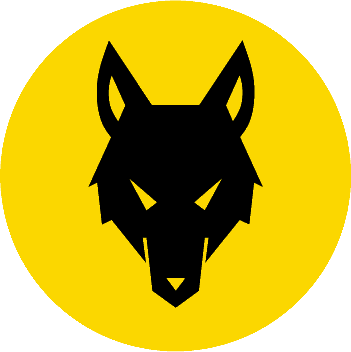

Ulveunger
Som ulveunge lærer du at binde knuder, slå et telt op og have det sjovt med andre børn. Man kommer på en lejrtur med spejderlederne og forældre, hvor man sover ude en nat. Når man starter som spejder, får man et gult tørklæde, når spejderlederne siger man har fortjent et, så må man lave noget mere, end dem der ikke har fået tørklædet. Man får lov til at købe en trøje, samt stammemærke og landmærke, ligesom alle andre har. Man får et mærke når man har været ved spejderne i længere tid, når man kan slå et telt op og vise at man passer ind og viser at man kan opføre sig ordentlig, når man er sammen med de andre ulveunger. Når man vil have et nyt mærke må man gøre hvad de voksne siger og så får man et nyt et.
Til forældre
Hos ulveungerne bliver alle optaget, uanset hvad. Der bliver ikke gjort forskel på børnene. Selvom børnene har det sjovt, lærer de stadig. De lærer at arbejde som en gruppe med de andre børn og de får mere ansvar. Børnene er meget udenfor, hvor de lærer at binde knuder og slå et telt op. I en gruppe ulveunger, er der 5-10 ulveunger, så der ikke er nogen der bliver overset, spejderlederne er meget gode til at høre alt hvad børnene siger og snakke med dem hvis der er nogle problemer. Som ulveunge kommer man på en én-dags lejrtur, hvor man overnatter ude i skoven, som ikke er for langt væk fra selve spejderhytten, og forældre er mere end velkommen til at tage med som frivillig hjælper.